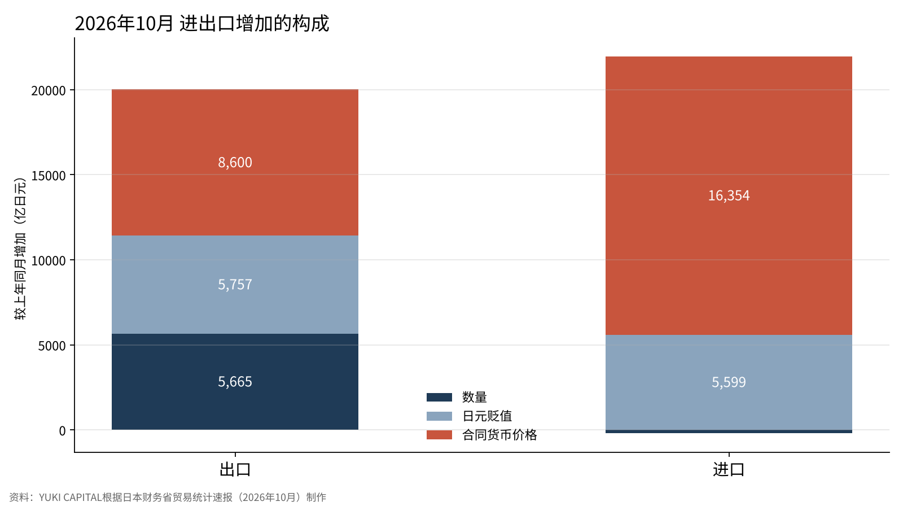
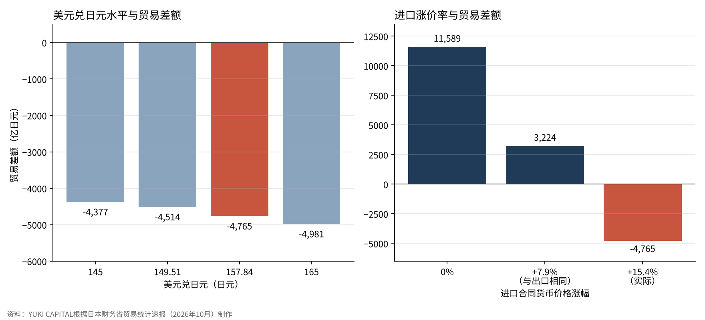

出口创历史新高，日本贸易为何仍是逆差？——把日本财务省2026年10月贸易统计拆成数量、汇率和价格
日本财务省11月18日公布的2026年10月贸易统计速报显示，出口为11.7688万亿日元（同比增长20.5%），进口为12.2453万亿日元（增长21.6%），均为有可比数据的1979年以来最高。
即便如此，差额仍为4,765亿日元的逆差，比上年同月约3,000亿日元的逆差有所扩大。
本文的问题是：出口增长中，"卖得更多"、"日元贬值使金额膨胀"和"价格上涨"各占多少？为什么出口创新高，逆差反而扩大？

- 出口增加的2.0022万亿日元中，数量增加只占约5,665亿日元（28%），日元贬值约5,757亿日元，合同货币计价的涨价约8,600亿日元。
- 进口数量几乎持平（-0.2%），但仅合同货币计价的涨价就增加了约1.6354万亿日元，这是逆差扩大的主因。
- 日元贬值以相同比率放大出口和进口，因此即使把美元兑日元从145日元调到165日元，逆差也只在4,377亿至4,981亿日元之间。决定逆差大小的不是汇率，而是进口商品的价格。
问题与背景
贸易差额是商品出口额减去进口额的差，不含服务和投资收益。出口数量指数是以基准年价格衡量的出口量指数，表示剔除价格变化后"卖了多少" [1]。
只看标题，10月的数字很强。半导体等电子零部件和半导体制造设备的出口同比都增长49.7%，汽车增长19.9%，对美出口增长23.9% [2]。另一方面，进口中原油增长60.5%，半导体等电子零部件增长60.0% [2]。
合同货币计价是指以交易合同所用货币（多为美元）衡量的价格。日元计价的价格等于合同货币价格乘以汇率变化。这一区分是本文拆分的核心。
出口创新高而逆差扩大，与直觉相反。要解开这个矛盾，需要把金额的增长拆成"数量"、"汇率"、"价格"三部分来看。
数据与方法
本文使用日本财务省贸易统计速报中的四组数字 [1][2]：出口和进口的金额与同比，出口数量指数（114.4，同比+5.8%）和进口数量指数（106.4，-0.2%），以及统计所用汇率（1美元157.84日元，上年同月149.51日元） [2]。
方法如下：把金额增长拆为（1＋数量增长）×（1＋日元计价的价格增长），再把日元计价的价格增长拆为（1＋日元贬值率）×（1＋合同货币计价的价格增长）。日元贬值率为157.84÷149.51−1＝5.57%。
由此推算，出口价格以日元计上涨13.9%，以合同货币计上涨7.9%；进口价格以日元计上涨21.8%，以合同货币计上涨15.4%。上年同月金额用今年金额除以同比还原，再把增加额分配给三个因素。
例如出口，用上年同月约9.7666万亿日元乘以数量增长5.8%，得到约5,665亿日元，作为"数量"的贡献；再用数量增加后的金额乘以日元贬值率5.57%，得到约5,757亿日元，作为"日元贬值"的贡献；剩下的约8,600亿日元作为"合同货币价格"的贡献。调换相乘顺序，分配会略有变化，但结论不变。
结果
出口从上年同月的约9.7666万亿日元增加了2.0022万亿日元，明细见下表。
| 上年同月 | 2026年10月 | 增加 | 数量 | 日元贬值 | 合同货币价格 | |
|---|---|---|---|---|---|---|
| 出口 | 9.7666万亿日元 | 11.7688万亿日元 | 2.0022万亿日元 | 5,665亿日元 | 5,757亿日元 | 8,600亿日元 |
| 进口 | 10.0701万亿日元 | 12.2453万亿日元 | 2.1752万亿日元 | -201亿日元 | 5,599亿日元 | 1.6354万亿日元 |

出口增长中，卖得更多的部分只占约三成，其余七成是日元贬值和涨价带来的金额膨胀。进口数量减少，金额却增加了2万亿日元以上，其中四分之三来自合同货币计价的涨价。
把出口和进口放在一起看，数量的贡献出口为+5,665亿日元、进口为-201亿日元，仅看数量，贸易差额约改善5,866亿日元。日元贬值的贡献出口+5,757亿日元、进口+5,599亿日元，几乎相互抵消。使差额恶化的是，进口涨价1.6354万亿日元比出口涨价8,600亿日元多出约7,754亿日元。
按地区看，逆差的来源很清楚。对美国出口2.1739万亿日元、进口1.4834万亿日元，顺差约6,905亿日元；对亚洲整体也有约1,883亿日元顺差 [2]。另一方面，对中国出口1.9373万亿日元、进口2.8426万亿日元，逆差约9,053亿日元；对欧盟也有约1,136亿日元逆差 [2]。
| 地区 | 出口 | 进口 | 差额 |
|---|---|---|---|
| 美国 | 2.1739万亿日元 | 1.4834万亿日元 | +6,905亿日元 |
| 亚洲 | 6.4105万亿日元 | 6.2222万亿日元 | +1,883亿日元 |
| 中国 | 1.9373万亿日元 | 2.8426万亿日元 | -9,053亿日元 |
| 欧盟 | 1.1078万亿日元 | 1.2214万亿日元 | -1,136亿日元 |
对华出口整体增长13.3%，但汽车下降53.3%，不到原来的一半 [2]。相反，半导体制造设备增长42.6%，对华贸易呈现"成品减少、制造工具增加"的形态 [2]。
按剔除季节因素的季调值看，10月差额为7,672亿日元逆差，大于原始值的4,765亿日元 [2]。出口环比增长3.3%，进口增长3.5%，从势头上看也是进口更强 [2]。
按品类看，进口涨价的中心是原油（+60.5%）、半导体等电子零部件（+60.0%）和计算机类（+52.7%） [2]。原油以美元购买，美元油价上涨会直接推高进口额。
敏感性分析
本文从两个方面检验结论在多大程度上取决于前提。第一是汇率：把出口和进口的数量及合同货币价格固定在10月水平，只把美元兑日元调为145、149.51、157.84和165日元。

结果，逆差在145日元时为4,377亿日元，149.51日元时为4,514亿日元，165日元时为4,981亿日元。日元贬值以相同比率放大出口和进口，逆差规模几乎不变。
第二是进口价格：把汇率和数量固定在10月水平，把进口的合同货币涨幅设为0%、+7.9%（与出口相同）和+15.4%（实际值）。涨幅为0%时为1.1589万亿日元顺差，与出口相同的+7.9%时为3,224亿日元顺差，只有在实际的+15.4%时才变成4,765亿日元逆差。可见决定逆差的不是汇率，而是进口商品价格的涨幅。
也可以求出平衡点：把汇率和数量固定在10月水平，只要进口的合同货币涨幅从+15.4%缩小到约+10.9%，差额就接近于零。
讨论
也有相反的看法：如果日元持续贬值，日本出口企业可以不降价就卖出去，数量也应增加。出口数量确实增长了5.8%，日元贬值推高数量的一面不能否认 [2]。
不过，这一个月的数量增长受到特定品类的较大影响，例如对美汽车出口增长37.2% [2]。对华汽车出口下降53.3%，不同地区的数量走势相反 [2]。仅凭一个月的数据，无法对日元贬值的效果下结论。
本文有三点局限。第一，这是速报值，确报时数字会变动。第二，拆分使用的是整体指数，而不是把各品类的价格变化逐一加总。第三，用同比还原上年同月的逆差约为3,035亿日元，与公布值约3,019亿日元略有出入。
另一种看法认为，逆差只是商品层面的事，日本整体的收入反而在增加。日本从海外投资获得的收入很大，经常账户长期保持顺差 [4]。把贸易逆差直接解读为"日本变穷了"还为时过早。
检验的标准是：日本银行的进出口价格指数中合同货币计价的涨幅，是否接近本文的推算（出口+7.9%，进口+15.4%） [3]。如果相差很大，拆分的结论就需要重新检查。
结论
2026年10月日本出口创新高，与其说是卖得更多，不如说是日元贬值和涨价让金额膨胀。进口数量持平，但美元计价的涨价使金额大幅增加。
决定逆差大小的不是汇率水平，而是进口商品价格的涨幅。美元兑日元变动20日元，逆差只变化约600亿日元；但如果把进口涨价控制在与出口相同的程度，就会回到顺差。
看贸易数据时，不能只凭金额同比判断强弱，需要把数量指数和汇率放在一起看。数量增长只占金额增长三成的月份，出口与其说是"强"，不如说是"贵"。
我是这样看的
我住在日本。我感觉日元贬值对持有海外股票的我影响不大，对我实业的采购成本也几乎没有影响。所以我不会因为汇率水平调整配置，持有的美元也不换回日元。
这次拆分确认了，决定日本贸易逆差的与其说是汇率，不如说是进口商品的价格。除了日美利差和美元兑日元，我还会看原油等美元计价价格的走向。
金额直接取自日本官方统计，因此以日元表示。按1美元＝159.33日元、1美元＝6.7118元人民币计，4,765亿日元的逆差约合29.9亿美元（约201亿元人民币）。
参考文献
- 財務省「貿易統計 用語の解説・指数の作成方法」 https://www.customs.go.jp/toukei/info/index.htm
- 財務省「令和8年10月分貿易統計（速報）の概要」2026年11月18日（数字は london3「2026年10月の貿易統計」の転記で確認） https://london3.jp/2026/11/202610boueki/
- 日本銀行「企業物価指数（輸出・輸入物価指数）」 https://www.boj.or.jp/statistics/pi/cgpi_release/index.htm
- 財務省「国際収支状況」 https://www.mof.go.jp/policy/international_policy/reference/balance_of_payments/
- 財務省・税関「外国為替相場（税関長公示レート）」 https://www.customs.go.jp/tetsuzuki/kawase/index.htm
- ロイター（Yahoo!ニュース）「貿易収支、10月は4,765億円の赤字 市場予想下回る赤字幅」2026年11月18日 https://news.yahoo.co.jp/articles/bce70a665771f50437cb9a6c9cc83d43eb506e48
图表与插图由YUKI CAPITAL制作
我每天在X上记录数字与判断。